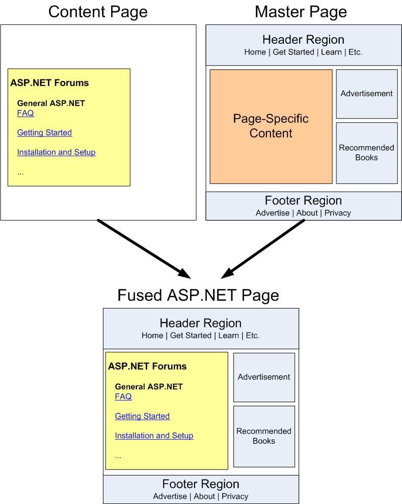

ASP.NET Cheatsheet¶
- ASP.NET + IIS + Sql Server
- PHP + Apache + MySQL
- JSP + tomcat + MySQL
Reference¶
1. 控件¶
1.1 什么是控件？¶
1.2 控件可以怎么分类？¶

HTML Server Controls = HTML Controls[runat=server]


ASP.NET Server Control v.s. HTML Element¶
| ASP.NET Server Control | HTML Element |
|---|---|
| asp:TextBox | input type="text" |
| asp:Button | input type="button" |
| asp:CheckBox | input type="checkbox" |
| asp:DropDownList | select option |
| asp:HiddenField | input type="hidden" |
| asp:HyperLink | a |
1.3 Properties in ASP.NET Server Controls 控件属性¶
CssClass- 为标准服务器控件指定类选择器
1.4 基础控件¶
-
Label 标签 - 用来显示提示信息
-
TextBox - 接受用户输入的数据
-
TextMode- 将 TextBox 控件设置为单行文本框、多行文本框或密码框html linenums=1 <asp:TextBox ID="TextBox1" runat="server" TextMode="Password"></asp:TextBox> -
Button 按钮
-
LinkButton
-
PostBackURL- 网页导航（优先执行） -
OnClick - 事件函数 - 触发服务器端事件
-
-
ImageButton
-
HyperLink
NavigateUrl- 设置目标网页
1.5 高级控件¶
1.6.1 ImageMap¶
- HotSpot - 定义图像映射中的可点击区域
- 圆形
- 不规则图形
- 矩形
1.6.2 FileUpload 文件上传控件¶
文件上传
控件：FileUpload
- 将图片直接存储在数据库中
- 将图片放在服务器的文件系统里，将其文件路径保存在数据库中
删除文件
File.Delete(Server.MapPath(filePath))
File 类的命名空间
using System.IO;
Path 类
1.6.3 Panel 容器¶
- BackImageUrl
1.6.4 RadioButtonList 一组单选按钮¶
- Items - 所有的单选项
- SelectedItem - 返回用户的选中项
1.6.5 Image v.s. img¶
如果想要通过服务器端代码来控制图片的显示，或者说，想要在模版页上控制图片的显示，则必须使用 Image 控件。
| Image | img | |
|---|---|---|
| 控件类型 | Web Server Controls 标准服务器控件 |
HTML Controls/Tags HTML(浏览器)控件/标签 |
| 链接图片地址的属性 | ImageUrl | src |
| 特点 | 能够识别~符号 |
只能使用相对地址 |
SiteMapDataSource 站点地图数据源控件¶
- SiteMapDataSource控件是数据源控件，它可以从站点地图中提取数据，作为TreeView和Menu控件的数据源。
Sitemapdatasource控件的常用属性
- ID: 为控件指定唯一的标识符。
- runat: 指定该控件在服务器端运行。
- ShowStartingNode: 指定是否在菜单中显示起始节点。设置为false将隐藏起始节点，只显示其子节点。
- StartFromCurrentNode: 指定是否从当前节点开始显示菜单项。设置为false将从根节点开始显示菜单项。
- StartingNodeOffset: 指定起始节点的偏移量。可以使用正值或负值来指定相对于当前节点的偏移量。
- ShowNodeLines: 指定是否显示节点之间的连接线。设置为true将显示节点之间的线条，以视觉上表示菜单项的层次结构。
1.6.6 Menu 控件¶
- Menu控件不能自动绑定到站点地图，需要显式地将其绑定到 SiteMapDataSource 控件上，才能显示站点地图的节点。
1.6.7 TreeView 控件¶
- TreeView控件由TreeNode对象构成，所以只要向TreeView控件的Items集合属性中添加该对象就可以构造简单的TreeView控件。
<asp:TreeView ID="TreeView1" runat="server"> <!-- (1) -->
<Nodes>
<!-- Add your tree nodes here -->
</Nodes>
<NodeStyle Font-Names="Tahoma" Font-Size="8pt" ForeColor="Black" HorizontalPadding="2px" NodeSpacing="0px" VerticalPadding="2px" />
<ParentNodeStyle Font-Bold="False" />
<SelectedNodeStyle BackColor="#B5B5B5" Font-Underline="False" HorizontalPadding="0px" VerticalPadding="0px" />
</asp:TreeView>
1.6.8 SiteMapPath 站点地图路径控件¶
- 来呈现网站的站点地图导航路径
- 只需要在页面中插入一个 SiteMapPath 控件，在浏览页面时它就会直接自动读取位于站点根目录下的站点地图 (Web.sitemap) 文件。
Sitemappath控件常用属性
- ID="SiteMapPath1"：控件的唯一标识符，用于在代码中引用控件。
- CssClass="breadcrumb"：控件的 CSS 类名，用于样式控制。
- NodeStyle-CssClass="breadcrumbNode"：节点样式的 CSS 类名，用于自定义节点的样式。
- CurrentNodeStyle-CssClass="currentNode"：当前节点样式的 CSS 类名，用于自定义当前节点的样式。
- PathSeparator=">"：路径分隔符，这里使用大于符号(>)作为分隔符。
- PathSeparatorTemplate：路径分隔符的模板，可以自定义分隔符的 HTML。
- NodeTemplate：节点模板，用于呈现非当前节点的链接。
- RootNodeTemplate：根节点模板，用于呈现站点地图的根节点。
1.6 数据验证控件¶
tree this¶
- Label
- BaseValidator
- BaseCompareValidator
- CompareValidator 比较验证
- CustomValidator
- RangeValidator 范围验证
- RegularExpressionValidator 正则表达式验证
- RequiredFieldValidator
Button.CausesValidation Property¶
禁止该按钮进行网页验证：Gets or sets a value indicating whether validation is performed when the Button control is clicked.
1.7 用户控件¶
1. 用户控件是什么？¶
用户控件文件有如下特点：¶
- 用户控件中没有“@ page”指令，而是包含“@ Control”指令，该指令对配置及其他的属性进行定义。
- 用户控件中没有html,body,或form元素，这些元素不许位于宿主中。
2. 怎么创建用户控件？¶
-
Contrl + Shift + A 创建 Web Forms User Control:
WebUserControl1.ascx -
初始代码
<%@ Control Language="C#" AutoEventWireup="true" CodeBehind="WebUserControl1.ascx.cs" Inherits="WebApplication.WebUserControl1" %>
<%@ Control Language="C#" AutoEventWireup="true" CodeFile="Head.ascx.cs" Inherits="Head" %>
- %@
Control指令Language: C#AutoEventWireup: trueCodeBehind/CodeFile: path/to/cs/fileInherits:WebApplicationName.WebUserControlName/ControlName
using System;
using System.Collections.Generic;
using System.Linq;
using System.Web;
using System.Web.UI;
using System.Web.UI.WebControls;
namespace WebApplication
{
public partial class WebUserControl1 : System.Web.UI.UserControl
{
protected void Page_Load(object sender, EventArgs e)
{
}
}
}
3. 怎么使用用户控件？¶
声明方式使用用户控件¶
注册用户控件（在页面中）
- %@
- Register 指令
- Src source
- TagPrefix
- TagName
注册用户控件（在 Web.config 中）
调用用户控件
以编程方式加载用户控件¶
（6）可以使用System.WEB.UI.Page类的LoadControl方法以编程方式创建用户控件。用户控件的类型由ASP.NET运行库决定，遵循约定文件名_扩展名。
可以使用Page类的LoadControl方法以编程方式载入用户控件。
Content Content2 = (Content)this.LoadControl("Content.ascx");
Content2.hif = "123";
this.Controls.Add(Content2);
4. 用户控件小结¶
| Name | Desc | Extension | 指令名称 |
|---|---|---|---|
| Web Forms User Control | an ASP.NET server control created using the visual designer | WebUserControl1.ascx | Control |
| Web Form | a form for Web Application | WebForm1.aspx | Page |
| Master Page | A Master Page for Web Application | MasterPage.master | Master |
Reference¶
References¶
2. 母版页技术¶

2.0 Reference¶
2.1 概述¶
- 母版页的扩展名：
.master - 母版页的页首指令：
<%@ Master %> - 在母版页里显示图片、超链接时，使用 ASP.NET 标准服务器控件。
2.2 如何创建一个母版页？¶
2.3 如何使用母版页？¶

<%@ Master %>
<asp:contentplaceholder runat="server" id="Main" />
<asp:contentplaceholder runat="server" id="Footer" />
<%@ Page MasterPageFile="A.master" %>
<asp:Content runat="server" ContentPlaceHolderId="main">
Content here.
内容页的所有私有内容都必须放在该控件中，如果将任何内容放在该控件之外，都会引发异常。
</asp:Content>
<asp:Content runat="server" ContentPlaceHolderId="Footer">
Content here.
</asp:Content>
MasterPageFile- 内容页通过该属性指定母版页的虚拟路径，从而与母版页建立起联系。ContentPlaceHolderId- 用来对应于母版页的 ContentPlaceHolder 控件。
web.config:
3. 常用对象¶
- ASP.NET 的内置对象是 .NET 框架封装的类实现的，不需要使用 new 关键字创建，可以在程序中任何地方调用。
1. Page¶
asp.net 为网页对象 Page 提供了系列事件，事件在网页加载时，顺序触发，其顺序为 Page_Init 、Page_Load 和 Page_Unload。 Page_Init 事件是页面首次加载时触发，Page_Load 事件是每次页面加载都会触发。
Page.IsPostBack 属性返回网页是否是首次加载，属性值为 false 时，表示该网页是首次被加载。
Page对象表示当前网页对象，Page.IsValid属性用来表示该网页是否通过了所有验证。
protected void Page_Load(object sender, EventArgs e)
{
if (!IsPostBack)
{
// 在 Page_Load 事件中进行初始化和设置
lblMessage.Text = "欢迎来到学习 Page 的示例页面！";
}
}
2. Response¶
Response对象主要用来向浏览器输出数据。
3. Request¶
Request对象主要用来读取浏览器数据。
4. Server¶
Server 对象用来提供访问服务器的方法和属性。
string physicalPath = Server.MapPath(relativePath)- 将相对/虚拟路径转换为物理路径- 相对于当前页面的虚拟路径
- 相对于应用程序根目录的虚拟路径
Server.MachineName()Server.Transfer()- 可以将请求转发到一个新的 ASP.NET 页面，新页面会处理请求并生成响应，但在处理完毕后会将控制权返回给当前页面。Server.ScriptTimeout- 用来设置访问网页超时时间
- 使用 Server.MapPath 方法可以将相对/虚拟路径转换为物理路径。
5. Cookie¶
Cookie 是在客户端存储的，并且可以被用户修改或删除。因此，在处理敏感信息时，需要谨慎使用 Cookie，并进行适当的验证和保护。
- 创建了一个名为"UserInfo"的新 Cookie 对象
- 设置 Cookie 的值，设置了两个键值对，分别是"UserName"和"Email"
- 通过设置 Expires 属性将 Cookie 的过期时间设置为当前时间加上七天
- 使用 Response.Cookies.Add 方法将 Cookie 添加到响应中，以便将其发送给客户端
- 检查是否存在名为 "UserInfo" 的 Cookie
- 如果存在，我们使用 Request.Cookies["UserInfo"] 获取 Cookie 对象
- 通过键值对的方式获取 Cookie 的值
- 在标签中显示 Cookie 的值
- 首先检查是否存在名为 "UserInfo" 的 Cookie
- 如果存在，我们创建一个新的同名 Cookie 对象
- 将其过期时间设置为当前时间减去一天
- 使用 Response.Cookies.Add 方法将 Cookie 添加到响应中，以便将其发送给客户端
6. Session¶
当用户在浏览器中访问你的网站时，ASP.NET 会为每个用户创建一个唯一的 Session。在用户的整个会话期间，你可以使用 Session 来存储和检索用户特定的数据。
确保在你的应用程序中适当地处理 Session 变量的生命周期和内存占用，以避免潜在的性能问题和资源浪费。
- 将一个名为 "UserName" 的 Session 变量设置为 "JohnDoe"
7. Application¶
Application 对象提供了一种在整个应用程序范围内共享数据和状态的机制。它可以存储和访问应用程序级别的变量，可以在不同的页面和会话之间共享数据。
请注意，Application 对象是在应用程序级别的，而不是在单个用户或会话级别的。因此，在使用 Application 对象时需要注意并发访问的线程安全性。
- 将名为 "TotalVisitors" 的应用程序变量初始化为 0。
- 获取应用程序变量 "TotalVisitors" 的当前值。
- 将其递增。
- 将新的值保存回应用程序变量中。
🧭 网站导航¶
站点地图¶
- 站点地图用于表示网站页面之间的导航关系，该关系依赖于计算机文件系统中所存储的页面之间的物理关系。
{URL}: 节点的URL地址，替换为实际的URL。{TITLE}: 节点的标题，替换为实际的标题。{DESCRIPTION}: 节点的描述信息，替换为实际的描述。{CHILD_NODES}: 子节点的占位符，在这里插入子节点的代码。
站点地图代码结构树
- siteMap: 根元素，定义了整个站点地图的结构。
- siteMapNode: 表示一个网站地图节点，可以包含子节点或子元素。
- 属性：
- url: 节点的URL地址。
- title: 节点的标题。
- description: 节点的描述信息。
- 子节点：
- siteMapNode: 表示当前节点的子节点。
- 属性：
- url: 节点的URL地址。
- title: 节点的标题。
- description: 节点的描述信息。
- 属性：
- siteMapNode: 表示当前节点的子节点。
- 属性：
- siteMapNode: 表示一个网站地图节点，可以包含子节点或子元素。